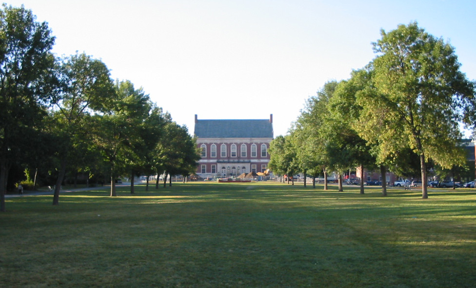

I am from Maine, and have lived in Maine my entire life. I am originally from Dover-Foxcroft, Maine which is about 45 minutes away from Umaine. The two biggest reasons I chose to stay here in Maine is because of my girlfriend and fmaily.
My girlfriend and I started dating my Senior year in high school, she was a Sophmore at the time so by the time I graduated, we had created a very close bond. I knew that I didn't want to leave the state so I could still see her, and being only 45 minutes away from home was perfect. Being that close to home meant that she could come visit me when she had time throughout the week, and the weekends I could go home and visit her. This system worked perfectly through my first year of college, and we are still together to this day, she will be graduating high school this year and maybe won't have so much distance between us afetr she does graduate because it's hard going from seeing her everyday to seeing her 2 times a week.
My family is also a big part of my life, and being 45 minutes away from them is much better then being in a different state then them. 45 minutes away is a great happy medium, because its far enough away that I can live my own life and be on my own, but it is also close enough that I can go and visit whenever I want. I am also a first generation college student, my parents never went to college and neither did my brother, so being a first generation college student away from my family can be hard. Going to see them helps take some of the stress of college away.
These aspects of my life are just to important to me, and it would be so hard not seeing them. With 1. Umaine having a fantastic education program, and 2. the location of the school fitting my needs, Umaine is the perfect college fit for me.
Links to:
[Welcome] [Sports] [Killing Free Time] [Umaine Website]